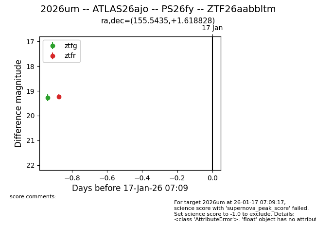
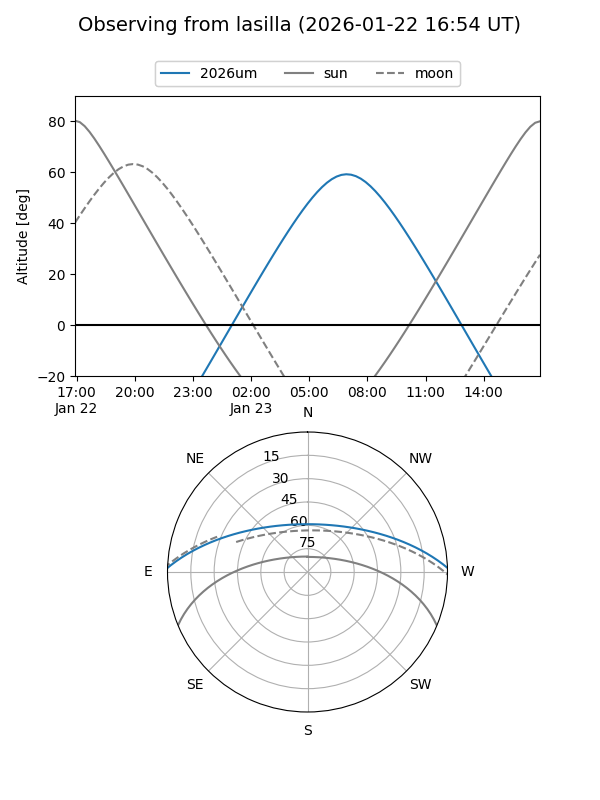
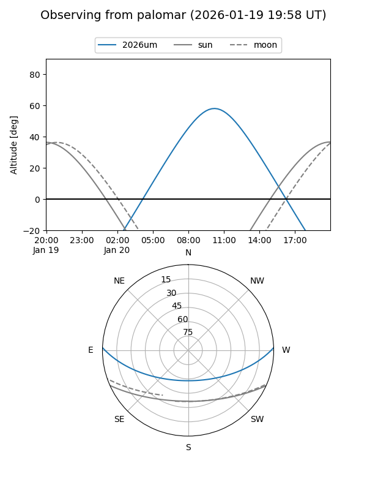
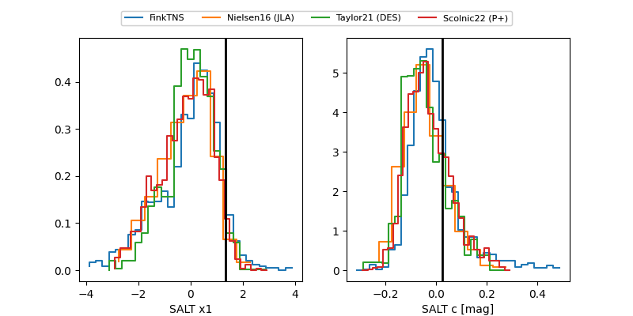

2026um
Target 2026um at 2026-01-18 22:50
Aliases and brokers:
FINK: link
Lasair: link
ALeRCE: link
TNS: link
YSE: link
alt names
ZTF26aabbltm (ztf,fink_ztf)
2026um (tns,yse)
ATLAS26ajo (atlas)
PS26fy (panstarrs)
Coordinates:
equatorial (ra, dec) = 155.5435,+1.61883
equatorial (HMS+DMS) = 10:22:10.43,+01:37:07.78
galactic (l, b) = (242.0378,+46.08835)
Flags:
Photometry:
last ztfg=19.28, ztfr=19.11
1 ztfg, 2 ztfr detections
Lightcurve

Visibility


Additional plots
